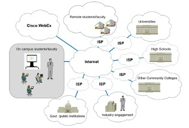
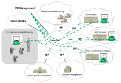
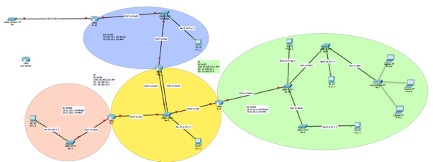
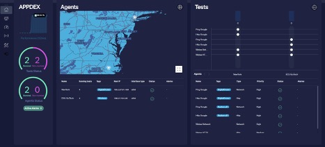
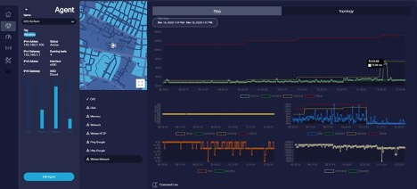
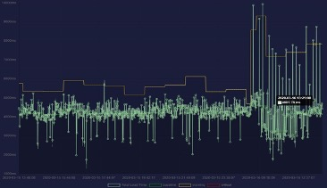
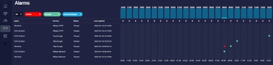

Deploying a Network Management Overlay for Education Video Conferencing Services
Abstract: Distance Education (DE) and Distance Collaboration (DC) adoption is rapidly growing to increase educational and innovation opportunities for a broader segment of the population, unencumbered by geographical and socio-economic constraints. The delivery of such services is rapidly evolving with the inclusion of new technologies and tools facilitating a more engaged, context aware and interactive participation. Without the ability to effectively monitor and manage the reliability, bandwidth, and latency between endpoints as well as key control plane elements such as DNS and call management, the efficacy and acceptance of the technology suffers due to poor user experience. Unfortunately, when putting together off-the-shelf solutions we are constrained by the operational models expected by various vendors involved. To address the specific needs of such services in DE and DC, we propose overlaying a network management layer that brings together vendor tools and purpose-built tools within the context of academic IT operations. In this paper we cover the approach taken to manage mobile, field deployed Smartboards funded by the USDA without adding significant overhead to the organization orchestrating the service and responsible for its operation. In this case, the service spans multiple independent administrative domains, an environment ripe for sub-optimal deployments and finger pointing in dealing with issues. We document the identification of applicable metrics, the deployment of relevant instrumentation and the implementation of management interfaces that reduce operational overhead while enabling a better user experience.
Key words: IP, Service performance, Cisco WebEx Board, Raspberry PI, SaaS, Monitoring.
Neither the entire paper nor any part of its content has been published or has been accepted for publication elsewhere. It has not been submitted to any other journal.
Distance Education is made possible by real time collaboration and interaction which in turn are enabled by a set of ever improving set of technologies and services. This evolution and these improvements provide the tools for delivering a very rich and effective learning experience regardless of the geographical location of either students or expert instructors. Distance Education and Distance Collaboration are particularly impactful in communities lacking the resources to provide access to highly experienced teachers, professors or professionals.
The deployment and operation of conferencing platforms is now easier than ever due to the availability of reliable, high-bandwidth networks, centrally managed control plane for SaaS (Software as a Service) offerings and the availability of many types of end-point devices that can be deployed to the remote locations. The process of virtualizing the classroom requires less involvement of traditional IT and relies on existing, commoditized infrastructures and cloud-based services easy to purchase off the shelf. IT organizations of the involved institutions are often bypassed in the product selection process and the operational model definition. While acquiring and deploying these solutions is easy, their management can become a challenge when issues occur. On one hand, current IT organizations are not well equipped to manage service overlays such as SaaS based solutions. On the other hand, SaaS based delivery relies on the good functioning of multiple management domains without cross domain visibility.
In this paper we detail the work of designing and implementing a management platform for a conferencing service launched by East Carolina University and distributed over multiple admin domains. The project offered a collaboration opportunity between students, graduate and undergraduate, from two distinct departments: Information and Computer Technology [1], and Computer Science [2]. The task assigned to the team was to deploy a monitoring solution enabling service self-management and joint management by the stakeholders in this conferencing service.
Department of Technology Systems at East Carolina University (ECU) received a grant from US Department of Agriculture (USDA) [3] to purchase Cisco WebEx boards [4] and deploy them to 12 colleges and high schools across Eastern North Carolina to facilitate distance education (Figure 1).
Figure 1. Footprint of the Planned Distance Education Service
This new service enables a more engaging, collaborative instructional experience involving students in multiple classrooms across Eastern North Carolina and ECU instructors. The potential positive impact of this service is significant. The USDA grant covers the cost of the hardware and the WebEx cloud-based service provided by Cisco [5].
Cloud-based services have been heavily marketed to give the impression that with the purchase of the endpoints and the service, the only thing needed to turn this offering into production is to assemble and deploy the WebEx boards. This is one of the reasons why organizations often time decide to skip working with their internal IT team to plan the rollout of cloud-based services. The practical aspects of operating IT services do however require answers to key operational questions:
• How will these assets be tracked once they are deployed? At a minimum, the service owner (ECU) should know if the endpoint is connected and what is the local network information.
• What is the quality of the control-plane path? ECU and the partner organizations need to know if the WebEx service is available to set up the sessions.
• What is the quality of the data-plane path? ECU and the partner organizations need to know if sessions established between various locations will deliver a good user experience
• When there is an issue, who is responsible for it? ECU and the partner organizations need to have the data that helps isolate fault domains and support any trouble-tickets opened with service providers.
Many of these questions might be answerable should ECU or the partner organizations have full management visibility in the WebEx service; however, that is rarely the case. Ultimately, cloud-based services insert multiple management domains in the service delivery path: Local IT, Internet Service Provider (ISP), Internet Backbone and Cloud Service Provider (WebEx) as shown in Figure 3. This leads to significant uncertainty on which domain owns the cause of an issue experienced by the service.

Figure 3. Management Domains for the WebEx Service.
This uncertainty becomes very problematic when issues crop up in service operation leading to significant downtime while finger-pointing delays resolution. Even if ECU explicitly states that it will not be responsible for the operational details of the service, it will inevitably find itself spending resources on issues that have nothing to do with its own IT environment. Moreover, ECU will have no access to the IT infrastructure hosting these endpoints thus limiting effective support.
The ECU team leading the service enablement project needed a solution that will enable it and the project stakeholders to have the visibility necessary to manage the assets, the infrastructure and the service involved in this offering. The goal is to gain this visibility and enable self-governance without requiring significant commitments from the IT teams at each of the locations, either in terms of configuration and policy changes or in terms of direct support.
This problem statement spurred two cross-departmental projects:
• The development of an Edge Computing platform that can support services and tools in support of the main service without requiring local IT departments to modify their own environment [6]
• The development of a monitoring framework that enables effective yet simple management across multiple admin domains without requiring significant local IT resources
The second project is leveraging the compute resources provided by the first one and it is described in this paper.
Managing cloud-based services across the entire service delivery path is becoming an important aspect of cloud adoption [7]. In this case, to gain the information needed to enable self-management of the service without having to request local resources or support its was decided to attach Edge Computing resources to the stands supporting the WebEx boards [6]. These local compute resources can be used to install tools for monitoring and troubleshooting the service. With the tools being themselves cloud-based, all stakeholders can view, among many metrics, the status of their location and the locations of organizations involved in an upcoming call, can view the availability of the WebEx service and the path quality between locations.
The monitoring solution needs to enable ECU to collect relevant operational information for the service:
• Network Attachment Information – Collect information about the local access layer where the WebEx board is connected. This information can be used for asset tracking based on IP address assignment and/or geolocation services.
• Location Availability Information – Collect information that validates the availability of the access layer at a given location
• Network Path Quality – Evaluate the quality of the network path between locations • Service Availability Information – Detect availability of WebEx service at all locations.
The solution must facilitate the self-management of the service without adding complexity to I, leading to a set of additional, operational requirements:
• Manageable – Simple provisioning and management of the data collection
• Secure – The platform should have a level of access security that meets the standard requirements of educational institutions
• Pro-Active – The platform should collect data that can provide an early warning about issues with the service, warnings issued prior to users experiencing them while in use
• Active – Considering the presumed lack of or limited local support, the platform should provide user with the ability to collect data on demand and execute tests on demand that would help admins narrow down the fault domain and at a minimum be able to engage the organization managing the fault domain
• Non-intrusive – The tests executed by the platform should not negatively impact compliance or performance. For example, the platform should not listen to traffic unless explicitly requested and allowed by the local IT organization.
The subsequent sections detail the technology and design choices for this platform.
Traditional IT organizations are currently siloed around aspects of service delivery: network and transport, data center, applications, security, etc [8]. This segmentation was driven by increasingly complex technologies in each of these service delivery domains. While in smaller organizations these siloed are reflected in domains of expertise mastered by members of the staff, in medium and large organizations,
IT organizational charts identify specific teams for each of the domains mentioned. This segmentation is naturally reflected in the skills developed by respective teams, the operating processes they develop, and the tools used to manage the scope of the infrastructure they are responsible for. Most of the time the monitoring and management tools are collecting domain specific data. Analytics and domain specific heuristics are applied to these data sets to determine the overall health of that section of the infrastructure.
This traditional approach to infrastructure and service management promotes a narrow perspective on the quality of the overall performance of the IT environment. Despite deploying many monitoring tools, IT organizations fail to detect issues experienced by the users. Moreover, despite collecting large monitoring data sets, and even when using expensive data mining tools, IT organizations drown in information rather than being able to have a better view of the IT environment. Too much data and an inability to know where to start troubleshooting can reduce effective decision making. The migration to cloud is exacerbating these issues. IT organizations more and more are lacking visibility across the entire service delivery path [9].
These considerations, along with the solution requirements described in Section 3, drove the project team towards selecting monitoring metrics focused on User Experience [10] rather than just connectivity. This type of information is also intuitively understood by the service users who do not need to be networking experts to be able to understand the state of the service and, when necessary engage the right organization for support.
The project team decided the platform should collect the following foundational and meta metrics:
• Foundational Metrics – Directly related to the operation and performance of the infrastructure o Local IP address, IP address of the gateway, Global IP address – This information helps administrators learn or confirm the location of the smartboard even though this data is collected for the device running the monitoring tests
o Latency, Drops, Jitter for the path to the WebEx service (Control Plane for the service) and for the path between locations. This data should be collected using ICMP [11], TCP and UDP protocols. ICMP PING is the simplest, most generic option, TCP based tests more accurately determine the quality of the path for the control plane. The UDP based test more accurately determine the quality of the path for the data plane
o Service availability based on service controller reachability
• Meta Metrics – Calculated based on foundational metrics and providing an overall insight on the quality of the services delivered o Mean Opinion Score (MOS) calculated based on the latency, drops and jitter data [11]
EffectiveLatency = (AverageLatency + Jitter*2 + 10)
if EffectiveLatency < 160ms, then R=93.2-(EffectiveLatency/40)
else R= 93.2 – (EffectiveLatency-120)/10
R’=R-(PacketLoss*2.5) if R’<0 then MOS=1
if 0<R’<100 then MOS=1+(0.035)*R’+(0.000007)*R’*(R’-60)*(100-R’) if R’>=100 then MOS=4.5
This variable truly is an objective, algorithmic estimate of Voice Quality that can be mapped to the known MOS scores IT professionals are familiar with
o Estimated Throughput calculated based on the latency and drops data [12]
MaxThroughputRate = (MSS/RTT)*(1/sqrt(p))
where:
MSS = 1460
RTT = Round Trip Time (to a target) p = PacketLoss
o Application Performance Index (APDEX) calculated based on the observed vs expected service performance [13]
Define TargetResponseTime (either through user input or based on industry best practices)
Create 3 buckets:
Satisfied – Tests where ResponseTime < TargetResponseTime
Tolerating – Tests where ResponseTime > TargetResponseTime
Frustrated – Tests where ResponseTime > (4*TargetResponseTime)
APDEX = ((Satisfied Tests) + (Tolerating Tests)/2) / (Total Number of Tests)
The two types of metrics help shape two distinct perspective on the service and enable two distinct activities summarized in Table 1.
Table 1. Metric-Type Applicability Matrix
|
Metric Type |
|
Relevancy |
|
Applicability |
|
Foundational |
• • • |
IT staff Service providers Service managers |
• • |
Assess infrastructure readiness for the service Provide guidance for infrastructure changes needed to support the service or improve delivery quality |
|
|
|
|
• |
Proactively identify issues |
|
|
|
|
• |
Troubleshoot issues |
|
|
|
|
• |
Provide relevant data to IT organizations collaborating on addressing an issue |
|
Meta |
• • • • |
Program managers Service Manager Instructors Participants |
• • • |
Determine overall performance of the service Determine the historical performance of the service for reporting purposes Determine service readiness for scheduling and/or starting upcoming sessions |
|
|
|
|
• |
Determine status of service for ongoing sessions |
In managing the meta metrics, from calculating APDEX to detecting a fault state for MOS, there are two possible approaches to making the information useful to users who are not very experienced or do not have IT core competency (most of the service users will fit in this category). These two options are presented in Table 2.
Table 2. Contextualizing Data for the Users
|
Context in Which Data is Presented |
Description |
Pros |
Cons |
|
Industry Standards and Best Practices |
Use industry best practices to provide the targets for nominal operation and trigger alerts. Same |
Higher level of objectivity based on a large set of |
Provides the ideal case scenario in environments that |
|
|
targets are used to calculate APDEX. Example [14, 15]: Good Voice Quality: Latency <50ms, Jitter<20ms, Drops 0.1-1% |
observations and expert analysis |
might not afford the resources for an ideal infrastructure |
|
Historical Data |
Use historical data collected from the current environment, correlated with user feedback on the quality of the service. Example: No User Complaints between 15:00 and 17:00 on Tuesday, February 3, 2020 when Average Latency was “x”, Average Jitter was “y”, Drops were “z%” |
Accounts for the constraints of the environment and the tradeoffs acceptable to the users |
Requires active collection of user feedback in parallel with data being collected by the monitoring platform |
The key goal of the project team is to put together a platform that is intuitive and easy to use, a platform helpful to most users while collecting sufficiently detailed information to also help IT professionals with more in-depth troubleshooting when necessary. Users should not have to know what latency, jitter and drops levels are needed for a good session, they just need to know if the service is ready to provide a good session.
The solution must take into consideration the typical management constraints of SaaS based services. It could not assume management access will be available to the actual WebEx board or the WebEx service controller beyond being able to pull publicly available statistics. For this reason, the solution is an overlay with monitoring endpoints mirroring the WebEx boards, connected to the same access networks.
The relevant monitoring data can be collected in two distinct ways, each with its benefits and challenges as summarized in Table 3. Table 3. Data Collection Methods
|
Data Collection Method |
Description |
Pros |
Cons |
|
Inline Monitoring |
Monitor the real traffic and analyze the timing for session setup and resource request/download |
It is a very accurate measurement of the actual user experience. Provides a wealth of data related to the overall service, from usage to quality. |
It is an intrusive approach requiring compliance evaluation related to security and privacy. Data collection points might be difficult to deploy without explicit authorization from and involvement of the local IT organization. Reactive observation, data can be collected only when sessions are in progress. |
|
|
|
|
Depending on implementation it might be expensive and negatively impact underlying traffic. |
|
Synthetic Transactions |
Initiate traffic that tests path quality, service availability, service response time |
Easy to implement without requiring significant involvement of the local IT organization. Deterministic, controlled and periodic tests enabling a more generic assessment and a proactive perspective on service monitoring. Facilitates active workflows such as troubleshooting, or data collection conditioned by triggered events. |
Data is more generic and less specific to applications or user workflows. Coordination between WebEx board use and the tests is necessary to ensure the same access layer is being used. No information related to the actual WebEx board usage can be collected by the platform however, this information is available through service statistics provided by the vendor and can be correlated with the monitoring data. |
The synthetic transactions approach was adopted for the following reasons:
• Ease of Deployment – Enable the management overlay with minimal involvement of local IT organizations either in terms of local, physical resources needed, in terms of approval processes or in terms of support resources
• Pro-Active Capabilities – Detect issues before users detect them to enable re-scheduling of sessions and resolution prior to session start
• Enable On-Demand Tests – Facilitate fault domain isolation either automatically or by IT professionals who can run on-demand tests through the platform
• Limited Impact – Data collection should not negatively impact local traffic, WebEx or otherwise by either being a bottleneck or by adding significant load on the network
• Lower Cost – The compute resources needed to support synthetic transactions is significantly lower than those that might be necessary for in line data collection.
For this project, an agent based, SaaS (Software as a Service) tool is used. The SaaS option avoids the need to install and maintain dedicated backend infrastructure for the management tools. The agent is installed on the Edge Computing (EC) platform built to support the monitoring service (Figure 4) [6].
Figure 4. Enclosure Design with Modular Hardware Assembly (top view and stand mounted).
The EC nodes are attached to the WebEx Board stands to provide a point of presence wherever the boards are deployed for both monitoring and troubleshooting purposes.
Agents are installed before the WebEx board is deployed in the field, with all the relevant layer 2 authentication information. When the EC device is powered up, the agent communicates with the cloudbased controller over port 443 and self-registers. The agent-controller communication is secure. Once registered, the agent is ready for scheduled or on demand tests configured via a centralized dashboard (see Figure 6).

Figure 6. EC Platform Management and Monitoring Service Operation
The agents are self-upgrading and they collect data even when they lose contact with the controller. Data collected while disconnected is locally stored and uploaded when the agent automatically re-connects to the controller once it becomes available again.
The agents provide infrastructure and service performance data from a local perspective which is dependent on the local IT environment, the local access provider and the connectivity between the access provider and backbone infrastructures (Tier 2, Tier 1 providers or Research and Education Network providers). For an independent assessment of a SaaS service it is beneficial to use agents deployed outside the participating organization’s infrastructures, on public cloud providers. The deployed solution will include at least two such independent, public cloud hosted agents.
Finally, an important capability of the monitoring platform sought by the project team is the ease of integration with other platforms and data sources. On one hand this capability is critical to the integration of other data sources. Additional information can be collected by interacting with open APIs provided by either the endpoints or the service. Combining multiple data sources provides a more complete perspective on the performance of the IT environments supporting the service and it facilitates an even more accurate fault domain isolation in the context of detected issues. On the other hand, integration with other controllers facilitates both dynamic service mapping and active troubleshooting [16,17].
A test environment simulating a multi-campus, multiple access type lab environment was developed for evaluating the solution prior to deployment on the EC platform (Figure 7).

Figure 7. Lab Environment for Testing the Monitoring Platform
In the lab environment the end points for both wired and wireless access are Raspberry PI 4s [18]. This embedded compute platform used by the EC was benchmarked for use within the monitoring solution with the help of the Phoronix Test Suite [19].
The management infrastructure was designed to be easy to use, informative and useful in troubleshooting issues. The key information is summarized on the dashboard which is meant to be accessible to all service users. In Figure 8 we show the platform dashboard while two monitoring agents, one on the Raspberry PI attached to the test WebEx board and one deployed in a Cloud provider (Digital Ocean) to use as a reference for service availability.

Figure 8. Management Service Dashboard
The dashboard captures the meta metrics described in Section 4, APPDEX is quantifying the overall health of the service, the “Test Status” and “Agent Status” gauges show the current status of the services and monitored locations while the map view and matrix view show detail the status of eache service at each location (color of the agent or the matrix vertex changes according to the alarm state of the location or the service).
To understand the performance of the network path and the WebEx service at a given location, a dedicated view is available for each agent as shown in Figure 9.

Figure 9. Performance of the Network Path for the WebEx Service at the Location of the Board
The agent view captures the foundational network metrics described in Section4 (Latency, Drops, Jitter, MOS and Estimated Throughput). The system is automatically analyzing the historical data to estimate the typical behavior of the service at that location. In Figure 9, the green lines represent the expected response time at a given hour during the day (the automatic baseline), the yellow line is the expected variability in data while the red line represents the limit above which data points are considered anomalous. This analysis is performed automatically, without requiring the user to have expertise in the monitored metrics. The baseline enables the users to know what to expect in terms of environment performance.
Data is also collected for web-based applications, starting with basic response time and diving into the various components relevant to HTTP based services. Figure 10 shows response time for the WebEx service measured by the local agent.

Figure 10. HTTP Response Time for the Monitored Service
An important component of the monitoring system is the alarm visualization meant to quickly summarize the current and past issues. Figure 11 shows the approach taken to visualize the start and close of an alarm state and to summarize the number of active alarms during every hour over the past 24 hours.

Figure 11. Summarization of the Environment Alarms.
At the time of this writing data was actively collected only within the test environment as the system was still being prepared for deployment. The ECU-SciTech is the type of agent that will be deployed on all edge computing devices attached to the WebEx boards [6]. The external, cloud-based agent will be used in production as an off-premise reference however, it will be deployed a hosting location within the state.
The solution was evaluated on multiple levels by the lead of the project deploying the WebEx boards and the ease of use received the highest score. The authors believe the community use will generate more feedback regarding data visualization which will be integrated in the second release of the solution.
In broad terms, there are two approaches to network and services monitoring: 1) Based on synthetic transactions (the approach described into this paper) and 2) Based on traffic analysis [20]. While both approaches have their own merits and together cover fully the monitoring needs of an IT environment, our research is focused on the former approach for the following reasons:
1. Synthetic transactions enable deterministic, proactive monitoring
2. By not analyzing actual/live user flows, the common concerns around privacy are not an obstacle to deployment
3. Agent based monitoring facilitates easy deployment across complex, federated environments without requiring policy reviews or requests for explicit changes or access to local information
4. To complete ITOM automation, agents are needed to facilitate active evaluation of troubleshooting steps or environment changes
The platform described in this paper is the first step in a larger research project into developing proactive, automated management of service overlays. At this stage, the platform and the analytics algorithms focus primarily on data collection, baselining the IT environment or the service footprint and finally on detecting anomalies. This capability is not currently offered in industry solutions. The goal is to continue the work of integrating such sensor/actuator agents with network and policy controllers to create self-healing networks as demonstrate in [17].
Unlike its counterpart approach of listening to actual user traffic, our approach only estimates user experience based on the response time of all participating services. The platform would also face challenges in finding a scalable way to simulate full user workflows which can be easily evaluated through flow capture. These limitations will make it difficult to troubleshoot some service issues however, it is the opinion of the authors that the issues that can be identified, isolated and troubleshot though this type of instrumentation will cover over 80% of the overall issues experienced by real IT environments. This assessment remains a topic of future research.
While the solution presented in this paper is addressing a very specific use case, the type of instrumentation proposed by it becomes very powerful in enabling other capabilities important in IT management such as continuous security assessment, compliance verification and SLA verifications. The authors believe that this IoT approach to IT management lends itself to many opportunities for innovation.
Distance Education and Distance Collaboration are essential tools for engaging a wide range of students and communities in the education process while delivery rich, expert guided learning experiences. Enabling such delivery mechanisms has become easier with the availability of conferencing boards and SaaS based conferencing services. Managing such services is however challenging when they cover a diverse set of stakeholders and they do not include budget for explicit support by the IT teams of all involved organizations.
This paper documents the approach, design and development of a management overlay for a video conferencing solution sponsored by the US Department of Agriculture supporting rural and underserved communities accessing expert faculty and educational content. The solution was developed by a faculty supervised interdisciplinary team of graduate and undergraduate students. It integrates state of the art concepts in monitoring cloud-based services across multiple admin domains and it leverages an in-house built, edge-computing platform. This cloud-based solution enables users without IT expertise to understand the current status of the service, proactively identify issues that might negatively impact performance and identify the right organization to contact when issues are detected.
The monitoring platform has an immediate practical value by making the conferencing service more resilient and manageable. At the same time, this platform represents an environment for developing additional capabilities that would facilitate ease of use, automatic fault domain isolation and even intelligent troubleshooting. These additional capabilities will leverage statistical analysis and machine learning to automatically profile the local environments and provide guidance for performance optimization. They would also provide the data that can be used by domain specific expert systems to execute explicit troubleshooting steps which can either narrow down the cause of an issue or even solve issues independent of IT staff intervention.
The nature of the service combined with the instrumentation provided by the Edge Computing [6] and the
Monitoring platforms provide a unique opportunity for future research in IT Operations Management (ITOM) Automation for cloud-based services in highly federated environments. It is envisioned that this type of research can lead to automated monitoring-management systems that can help reduce the load of understaffed IT organizations supporting education institutions.
1. East Carolina University, College of Engineering and Technology, Department of Technology Systems, Information and Computer Technology, https://cet.ecu.edu/techsystems/undergraduateprograms/information-computer-technology/
2. East Carolina University, College of Engineering and Technology, Computer Science Department, https://cet.ecu.edu/csci/
3. P. Lunsford, J. Pickard, J. James, J. Linn, "Strengthening the Pipeline from Highschool to Community
College to University in Rural Underserved Communities Through a Collaborative Videconferencing
Infrastructure", Submitted to 2020 ASEE Annual Conference
4. Cisco WebEx Board, https://www.cisco.com/c/en/us/products/collaboration-endpoints/webexboard/index.html
5. Cisco WebEx conferencing service, https://www.webex.com
6. C. Popoviciu, P. Lunsford, J. Pickard, C. Sawyer, S. Wear, S. Lee, D. Drummond, " Deploying Edge
Computing to Augment Endpoint Functionality", Submitted to 2020 ASEE Annual Conference
7. G. Aceto, A. Botta, W. de Donato, A. Pescape, "Cloud Monitoring: A Survey", Elsevier, vol 57, issue 9, p. 2093-2115 (2013)
8. J. Edwards, "Data Silos: Now and Forever?" https://www.informationweek.com/strategic-cio/itstrategy/data-silos-now-and-forever/a/d-id/1333246
9. L.Skorin-Karpov, M. Varela, T. Hoßfeld, K. Chen, "A Survey of Emerging Concepts and Challenges for
QoE Management of Multimedia Services", ACM Transactions on Multimedia Computing, Communications and Applications (TOMM), Article 29, May 2018
10. L. Wang, X. V. Wang, "Latest Advancement in Cloud Technologies", ISBN: 978-3-319-67692-0, Springer (2017)
11. L. Cottrell, "Tutorial on Internet Monitoring & PingER at SLAC, https://www.slac.stanford.edu/comp/net/wan-mon/tutorial.html#intro
12. The macroscopic behavior of the TCP congestion avoidance algorithm by Mathis, Semke, Mahdavi &
Ott" in Computer Communication Review, 27(3), July 1997
13. APDEX Alliance https://www.apdex.org/overview.html
14. E. Nemer, "Handling VoIP Speech Coding Challenges: Part 1", https://www.eetimes.com/document.asp?doc_id=1271981
15. "Video Quality of Service", https://www.cisco.com/c/en/us/support/docs/quality-of-service-qos/qosvideo/212134-Video-Quality-of-Service-QOS-Tutorial.html#anc10
16. T. Avanesov, G. Gheorghe, M. Palattella, M. Kantor, C. Popoviciu, T. Engel, "Network
Troubleshooting with SDN Radar", IFIP/IEEE International Symposium on Integrated Network
Management, 2015
17. G. Gheorghe, T. Avanesov, M. Palattella, T. Engel, C. Popoviciu, "SDN-Radar: Network troubleshooting combining udser experience and SDN capabilities", Proceedings of the 2015 IEEE
Conference on Network Softwarization (NetSoft, 2015
18. Raspberry PI 4 performance throttling due to high CPU temperatures, https://www.cnxsoftware.com/2019/06/24/raspberry-pi-4-benchmarks-mini-review/
19. “Phoronix Test Suite - Linux Testing & Benchmarking Platform, Automated Testing, Open-Source
Benchmarking.” Phoronix Test Suite - Linux Testing & Benchmarking Platform, Automated Testing, Open-
Source Benchmarking, www.phoronix-test-suite.com/
20. S. Lee, K. Levanti, H.S. Kim“Network monitoring: Present and future.”, Elsevier, Computer Networks, Vol 65, June 2014, pg. 84-98